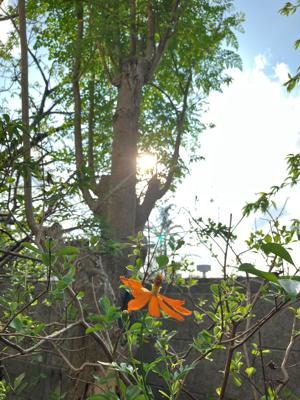

うるがいの話 ある日
最新: 令和５年のウンケー【うるがいの話 ある日】とは 一日だけのプログです
『うるがいの話』の最新一日だけのプログで、通信料が少なく経済的だ。カニの画像をクリックすると全ての日付が載る『うるがいの話』サイトを表示します
|
|
【うるがいの話】 うるがい(ｳﾙｶﾞｲ urugai)とは、『もずくがに』の名前でとても大きくなります。 |
|---|---|
|
|
【カミマヤーの話】 猫のことを方言でマヤーといいます。カミマヤー（kamimayaa）とは、神の猫のことです。 |
|
【たながぁの音楽】 たながぁ（ﾀﾅｶﾞｰ tanagaa）とは手長えびのことで、何種類かあり大きいのは車 エビぐらいになります。 |

|
【ぶながぁの話】 ぶながぁ(ﾌﾞﾅｶﾞｰ bunagaa)とは、赤い髪の毛、赤い身体、そして身長は１ｍ２０ｃｍ ぐらい、川の蟹を食べているの目撃された。場所は沖縄県国頭郡大宜味村のと ある村僕の隣近所に住んでいる爺さんから、聞いた話です。 |
|
|
【ギーマの話】 ギーマ(giima)とは、山原の里山に咲くスズランに似た、 花を付けます。実は食べられます、 気が付くと口の周りが紫になっています。 |
2023年08月28日 (月）令和５年のウンケー
15:54

仏壇に置く花を準備していたヨメが、昨日『のうれんプラザ』新里花店で購入
したケイトウ（鶏頭）が枯れている！と言われ、確認すると確かに二つも枯れ
ている。昨日の朝、県立図書館へ行く前の８時５０分頃にプラザに行くとまだ
花屋さんが、開いていない。何時に開くのだろうと、思っていたらおばさんが
シャターに近づき、お店を開け始めた。こじんまりしたスーペスのお店から収
納していた、花屋などを通路側に並べ初めていた。鮮度の良さそうなものは無
かった、ケイトウの花が二つと、黄色の小菊が包まれたのが７００円であった
ので選ぶ、そして４００円の胡蝶蘭の切り花と合わせ千百円支払おうとすると
千円でいいよと言われた（得したと思った）。風呂場で茎の根元を水に浸し一
日置いたのがいけなかったかもしれないが、なにか悪いものを買わされた感が
する。さらに、おとといリュウボウのスパーから買った、今帰仁村スイカのて
っぺんが割れているとヨメが騒ぐ、確認する、確かに、これでは仏壇に飾れな
い。どの時点で、割れたのだろうか、今年はスイカは飾らないことにする。
アマゾン中古プリンターの出品者への問い合わせの回答が来た。ム！
2023/08/27 19:02
お世話になります。
説明分に何かしらのエラー、またはトラブル品となっておりますので治せる方
のみご購入をお願い致しますとご記載しております。
ご理解の程宜しくお願い致します。
『説明分に何かしらのエラー、またはトラブル品となって』いるとは書いてな
かったが！、マ、出品者の評価をちゃんと確認しなかった私がいけない。
昨日の夕方５時コドモから バスケット会場の様子 がラインで届いた。試合は
９時からなのに、でもさぞかし楽しかっただろう。
１５時４７分 ビットコインの総資産 ￥１１、０１２（↓４５）